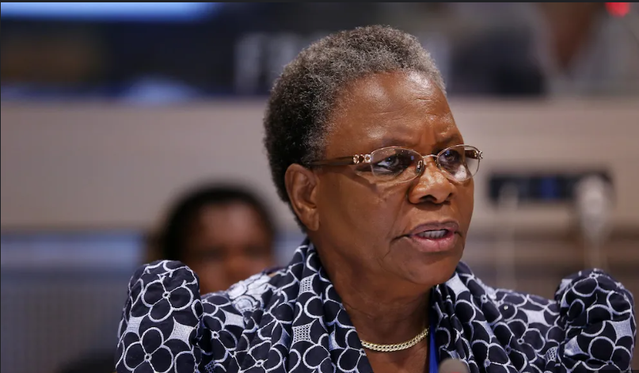

Madam President: Netumbo Nandi-Ndaitwah Makes History in Namibia
By: Mateus Natanael
07 June 2025
President Netumbo Nandi-Ndaitwah: Namibia’s First Female President Makes History
Windhoek, Namibia — In a moment that will be remembered as a milestone in Namibia’s democratic history, Netumbo Nandi-Ndaitwah was officially sworn in as the country’s first female president, ushering in a new era of leadership, progress, and empowerment. For decades, Netumbo Nandi-Ndaitwah has been a formidable figure in Namibian politics. A liberation struggle veteran, diplomat, and long-serving cabinet member, her rise to the presidency is a testament to her unwavering commitment to public service, gender equality, and national development. Her presidency marks a symbolic and practical shift toward inclusive leadership in Namibia, where women have historically been underrepresented in the highest offices of power.
A Life of Service
Born on October 29, 1952, in the Ohangwena Region, Nandi-Ndaitwah joined the liberation struggle at a young age. She received military and diplomatic training abroad and later became one of the first female members of SWAPO’s diplomatic corps. Her political journey includes numerous groundbreaking roles: she was the first woman to serve as Minister of Foreign Affairs and the first woman to hold the position of Deputy Prime Minister. With over four decades of experience in both domestic and international arenas, Nandi-Ndaitwah became a symbol of resilience and integrity. Her leadership style is often described as disciplined, principled, and inclusive — qualities that helped solidify her reputation within the SWAPO Party and among the Namibian people.
Breaking the Political Glass Ceiling
In 2022, Nandi-Ndaitwah made history when she was elected as the SWAPO Party’s vice president — a move that positioned her as the party's presidential candidate in the 2024 general elections. Her nomination was widely viewed as a progressive step for the ruling party, affirming its commitment to gender equality and generational renewal. Her electoral campaign focused on unity, economic reform, youth empowerment, and the fight against corruption. In November 2024, she won the presidency with a strong mandate from the people, securing over 55% of the national vote. Her inauguration on March 21, 2025, coincided with Namibia’s Independence Day — a fitting backdrop for a leader who has spent her life fighting for freedom, dignity, and justice.
A President for All
As president, Netumbo Nandi-Ndaitwah has pledged to uphold the values of transparency, accountability, and national unity. She has emphasized the importance of inclusive governance, promising to prioritize education, healthcare, digital transformation, and sustainable development. During her inaugural address, she declared:
“This victory is not mine alone — it belongs to every girl who dared to dream, every woman who broke boundaries, and every Namibian who believes in a better future. Together, we will move Namibia forward.”
The Road Ahead
While her presidency is a cause for celebration, it also comes with great expectations. Namibia, like
many nations, faces challenges ranging from youth unemployment to climate change. President
Nandi-Ndaitwah’s ability to navigate these complex issues while fostering unity will define her legacy.
Yet, her rise to the highest office has already changed the narrative. For the first time, young
Namibian girls can look up and see a reflection of themselves in the State House — a powerful symbol
that the glass ceiling has not just cracked, but shattered.